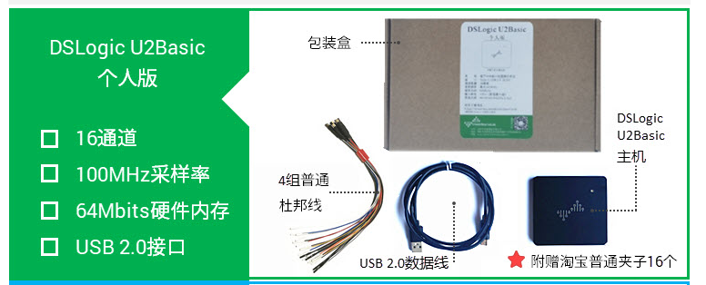
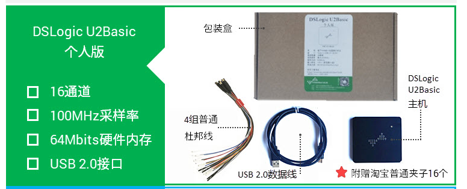
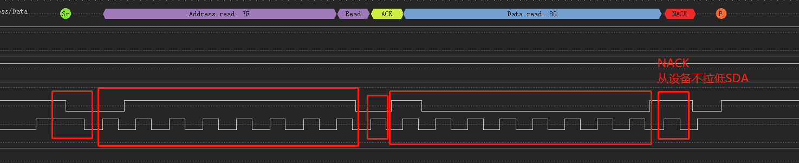
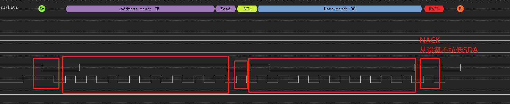

概述
简单记录下梦源逻辑分析仪和示波器简单实用方法。
参考
产品介绍
目前公司买的是U2BASIC版本，性能描述如下：
 

支持协议列表：
软件下载地址
https://www.dreamsourcelab.com/download/
使用方法
硬件选项

不同的硬件设备，设备选项窗口的具体内容也会不同，对于 DSLogic 设备， 会出现如下图（图 2-6） 所示的硬件选项设置窗口：
运行模式：
Buffer 模式： 采集过程中，数据存储在板载内存中，采集完成后通过 usb传输到 PC。这种模式有两个优点，第一，板载内存带宽高，不受 usb 带宽限制，从而可以到达更高的采样率；第二，由于采集和传输不是同时进行的，所以对usb 传输速度没有硬性要求，极大的提高了传输的稳定性， 避免了数据传输错误，或者标称的采样率达不到的情况； 此模式的不足之处在于，板载内存的大小相对较小，采样深度会受到影响。 DSView 在此模式下支持 RLE 硬件压缩来扩展采样深度，对于跳变较少的信号，可以获得非常高的压缩比，在一定程度上弥补了采样深度的不足。
Stream 模式： 采集过程中，数据实时传输到 PC 内存中。这种模式采样深度不受板载内存限制，不过采样带宽受 usb 传输带宽的限制，所以采样率较低。对于速率较低的信号，想要获取较大的采样深度的情况，可使用此模式。
内部测试： 此模式仅作测试使用。

采样时长与采样频率
采样时长
如上图所示，前一个选项框表示采样的时间长度， 不同模式/采样率/通道数的设置下，采样时长有不同的范围。
Buffer 模式： 最大时长 = 硬件内存大小 / 采样率 / 通道数。 例如， DSLogic Plus 设备具有 256Mbits 硬件内存, 所以在 100M 采样率 16 通道设置下, 最大的采样时长为 167.77 毫秒; 在 400M 采样率 1 通道设置下, 最大的采样时长为 671.09 毫秒. 如果开启 RLE 硬件压缩功能，可以达到更大的采样时长，不过这取决于被采集信号变化量的多少。
Stream 模式： 最大时长（64 位版本） = 16G / 采样率。例如， 1M 采样率，最大采样时长为 4.77 小时； 100M 采样率， 最大采样时长为 2.86 分钟。
采样频率
如上图所示，后一个选项框表示每通道的采样频率， 不同模式下有效的采样频率有所不同。
Buffer 模式：
100M@16 通道： 10KHz~100MHz
200M@8 通道： 10KHz~200MHz
400M@4 通道： 10KHz~400MHz
Stream 模式：
100M@3 通道： 10KHz~100MHz
50M@6 通道： 10KHz~50MHz
25M@12 通道： 10KHz~25MHz
20M@16 通道： 10KHz~20MHz 通常情况下，采样频率需要设置为被测信号最高频率的 4x-10x 倍。例如采样115200 波特率的串口信号，采样率通常设置为 1MHz，采样 50MHz 的 SPI 信号，采样率可以设置为 400MHz。当然，采样率越高，获取的采样结果的分辨率越高，也越接近真实的信号。
触发设置
设置触发条件后， 如果被测信号的波形不满足设定条件，采样过程会一直等待，直到满足设定条件后，才可完成当前采样。触发可以帮助我们捕获想要观察的特定时刻的信号， 是逻辑分析仪最重要的特性之一。 DSView 支持两种触发模式：简单触发和高级触发。
每个通道的触发含义如下图（图 2-11）所示：

采集模式
如图 2-21 所示， DSView 支持两种运行模式：单次采集和重复采集。
单次采集： 在这个模式下，采集操作只会被执行一次。当采样时长达到时，采集会自动停止。
重复采集： 在这个模式下，采集操作会被自动重复执行，直到按下停止按钮。结合触发条件的设置，这个模式可以帮助我们持续观察特定事件下的波形，而不用任何人工的干预。例如每次重启，或者每次按键等等。另外，此模式支持每次采样间隔时间的定义（从 1s 到 10s）。

协议解码

单击解码按钮即可调出协议解码窗口，协议解码窗口主要分为两个部分，协议选择和设置以及解码结果列表显示区域，如下图（图 2-44）所示。

添加协议
在协议列表框中选择需要添加的协议名称， 单击协议面板的“+” 号按钮，就会跳出协议的设置窗口，包括协议的显示、 通道、 参数以及解码区域设置。如下图（图 2-45）所示， 设置好相应参数之后，点击确定按钮，即可成功添加新的协议。如果有多个协议需要添加，依次选中添加即可。

数据保存
数据保存可以把当前采集到的数据保存成 DSView 软件可解析的文件格式，以便重新使用 DSView 打开查看相应波形。
数据打开
DSView 只支持打开自己保存的后缀为 dsl 的文件。单击“打开” 菜单，选择需要载入的数据文件即可。
数据导出
DSView 支持把当前数据导出到通用文件格式，以便使用其他软件处理数据。在逻辑分析仪模式下， 目前支持的导出格式包括： csv， vcd 以及 gnuplot 等。
截屏
如果希望把当前界面保存成图片格式，可以选择截屏操作。单击“截屏”菜单， 将保存当前的界面图形为 PNG 格式的文件。
实例分析
I2C读取实例
下图是对从地址0x3f(7bit)设备0x13寄存器读取到值为0x80。

分析如下：
 

示波器使用介绍